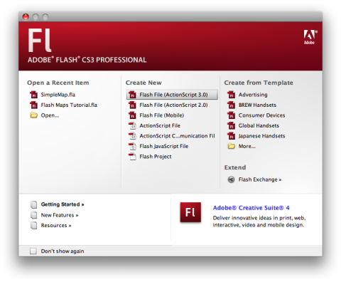
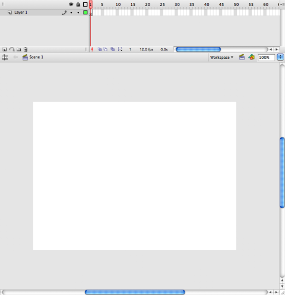
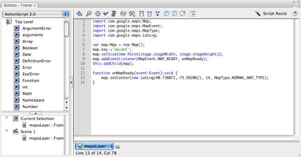
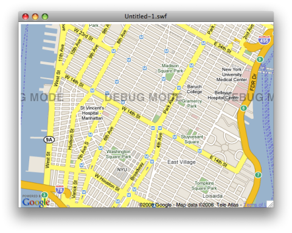
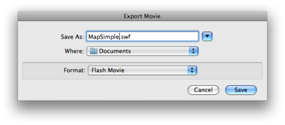
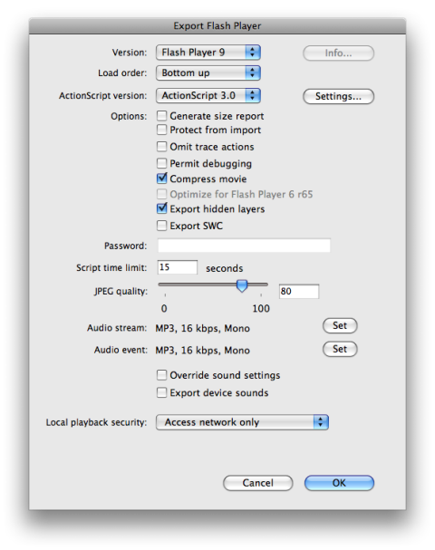
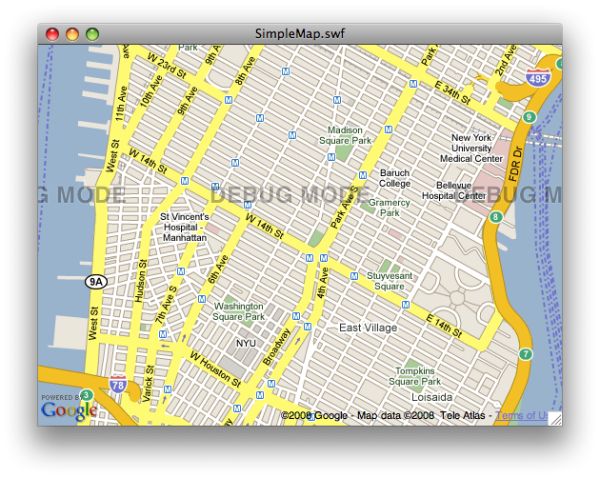

©2010 Google -
Code Home -
Terms of Service -
Privacy Policy -
Site Directory
Google Code offered in:
English -
Español -
日本語 -
한국어 -
Português -
Pусский -
中文(简体) -
中文(繁體)
Maps API for Flash
- Developer Guide
- API Reference
Code Samples:
More Resources:
Maps JavaScript API V3
Maps Javascript API V2
(Deprecated API)
Maps Data API
(Deprecated API)
Static Maps API
Earth API
Includes enterprise licensing and support
Google Maps API for Flash - Flash CS3 Tutorial
This tutorial assumes you have purchased and installed the Flash CS3 application. More on the Flash authoring application is available at http://www.adobe.com/products/flash/.
Development within Flash CS3 does not require understanding of Flex. If instead, you wish to develop a Flash application using the Flex framework, consult either the FlexBuilder Tutorial or the Flex SDK Tutorial.
Setting Up Flash CS3
Note: Before proceeding with this tutorial, make sure you've installed the Maps API for Flash SDK and obtained a Maps API key as indicated in Setting Up Your Development Environment.
Before you begin authoring a Google Maps application within Flash CS3, you first need to add the Google Maps API for Flash SWC component to Flash CS3. To do so:
If you have Flash CS3 currently open, quit the application.
Navigate to the location where you saved the Google Maps API for Flash SDK and find the non-Flex version of the interface library (e.g.
lib/map_1.7.swc).Create a "Google" directory in one of the following locations and copy the SWC file there:
- (Windows)
C:\Program Files\Adobe\Adobe Flash CS3\language\Configuration\Components
(Note that there is a separate directory for each language supported in Flash CS3. Place the SWC within whatever language directory you will be authoring Flash content.)
- (Mac OS X)
Macintosh HD/Applications/Adobe Flash CS3/Configuration/Components
Do not copy the Flex version of this file. The Flex version is only supported for FlexBuilder or Flex SDK development.
- (Windows)
Flash CS3 is now set up to support the Google Maps API for Flash.
Writing the "Hello World" of the Maps API for Flash
The easiest way to understand how to build a Google Maps API for Flash application within Flash CS3 is to see a simple example. In this tutorial, we'll create a simple Flash movie, add some ActionScript code, export that file as a SWF file, and launch the file within a browser for visual inspection.
Creating Your Project
Once you have added the Google Maps API for Flash component to Flash CS3, start the Flash application and select Create New -> Flash File (ActionScript 3.0) on the Welcome screen.
(If you don't see the welcome screen, select File -> New and select Flash File (ActionScript 3.0) from the New Document dialog box.)
Flash CS3 starts up and displays a blank canvas (known as the "Stage"). If the Timeline pane is not already present, select it via Window -> Timeline.
Select Window -> Components. A Components dialog box will appear. Click on the Google selector to display the GoogleMapsLibrary component.

Click on the GoogleMapsLibrary and drag it onto the Stage. A thin blue bounding box will appear on the blank stage. Don't worry about positioning this component correctly, as this box does not affect the map's true positioning.
Writing Code
Maps within the Google Maps API for Flash are manipulated using ActionScript 3.0 code. This tutorial will not attempt to teach the nuances of ActionScript. Online tutorials on ActionScript are available at the following locations:
- http://livedocs.adobe.com/flash/9.0/ActionScriptLangRefV3/
- http://www.adobe.com/devnet/flex/quickstart/coding_with_mxml_and_actionscript/
Opening the Actions Editor
Within Flash CS3's Timeline window, right-click within a frame of your choosing and select the Actions option. An Actions - Frame dialog box appears. Ensure ActionScript 3.0 is selected from the drop-down menu, and enter the following code in the editing area. (We will explain this code in the following section.)
(This code is provided below for you to cut and paste.)
import com.google.maps.LatLng;
import com.google.maps.Map;
import com.google.maps.MapEvent;
import com.google.maps.MapType;
var map:Map = new Map();
map.key = "your_api_key";
map.sensor = "true_or_false";
map.setSize(new Point(stage.stageWidth, stage.stageHeight));
map.addEventListener(MapEvent.MAP_READY, onMapReady);
this.addChild(map);
function onMapReady(event:Event):void {
map.setCenter(new LatLng(40.736072,-73.992062), 14, MapType.NORMAL_MAP_TYPE);
}
Even in this simple code snippet, there are several things to note:
We import a set of libraries from the
com.google.maps.*namespace.We instantiate a
Mapobject and set themap's API key.We set the
map's sensor state to"true"or"false".We set the
map's size to match that of the stage.We add an event listener to notify us when the map is ready to display.
We attach the map to the Flash movie.
Within that event listener, we center the map on Manhattan.
These steps are explained in more detail below.
Importing Libraries
import com.google.maps.LatLng;
import com.google.maps.Map;
import com.google.maps.MapEvent;
import com.google.maps.MapType;
ActionScript libraries are imported with the import declaration. In the sample
code above, we import several Google Maps Flash libraries. To compile your SWF file successfully,
you should ensure that you import libraries for types that you use within your sample code.
We recommend that you import only those classes you need.
Declaring the Map
var map:Map = new Map(); map.key = "your_api_key"; map.sensor = "true_or_false";
The com.google.maps.Map object is the fundamental object within the Google Maps
API for Flash library. Here we instantiate a Map object and assign it to the
map variable. We then set the map's key property to a
registered API key. We also explicitly set the map's sensor property
to either "true" or "false", indicating whether we are detecting
the user's location (via a GPS sensor, for example). (See
Specifying the Sensor
Parameter for more information.)
Note: Except within this tutorial, the code examples in this
documentation set use the Flex framework. For the most part, that code can be used within Flash CS3.
However, you will need to at least create a map variable as shown here to refer to the
Map instance, and you will need to set up the map and attach it to
the Flash movie object directly as shown in this tutorial.
Setting the Map Size
map.setSize(new Point(stage.stageWidth, stage.stageHeight));
For simplicity, we wish to have the map fit the size of the Flash stage. We can enforce this
restriction by setting the size of the map to the global stage object's
stageHeight and stageWidth properties.
Note! In the Flex examples provided in this documentation set,
there is no need to set an explicit size using the setSize method. However, Flash CS3
developers will need to add this method to use those examples.
Setting Up Event Listeners
map.addEventListener(MapEvent.MAP_READY, onMapReady);
ActionScript, like JavaScript, is an event-driven programming language. User interactions within Flash objects are handled by registering event listeners on objects for specific events.
Here we add an event listener to the Map object for the
MapEvent.MAP_READY event. This event handler acts as a "hook" for initialization
of the Google Maps API for Flash application. When the map receives that event, it calls the
onMapReady function, which is shown below.
function onMapReady(event:MapEvent):void {
setCenter(new LatLng(40.736072,-73.992062), 14, MapType.NORMAL_MAP_TYPE);
}
This onMapReady() function passes an event parameter of type
MapEvent (which is ignored in this case) and then calls setCenter()
using the given parameters (which define a location, a zoom level, and the type of map to show).
Note: You may also initialize your map by intercepting and
handling the MapEvent.MAP_PREINITIALIZE event instead. For information on this
event, see the discussion of MapOptions.
Events are discussed in more detail within the Map Events section of the Google Maps Flash documentation.
Attaching the Map
this.addChild(map);
Finally, we need to attach the map to the Flash movie itself. We do this by calling
this.addChild(map). Note that we use the this keyword to access the Flash
root component directly (in this case, the Timeline object.)
Testing Our Flash Movie
We are now ready to launch our Flash movie. Select Control -> Test Movie. Flash CS3 will compile the ActionScript code and launch an internal Flash player for debugging purposes. You should see a small map centered on Manhattan.
Note that since this SWF file is accessed via a local file system, it is shown in Debug mode.
Exporting Our SWF File
If everything works as intended, we will want to create a SWF file, which we can then post for external use on a publically available website. To do so:
Select File -> Export. The Export Movie dialog box will appear.
Select a name for your file (e.g. MapSimple.swf and leave the format as a Flash Movie. The Export Flash Player dialog box appears.
Ensure that Local playback security: is set to Access network only. This ensures that the Flash player can communicate with Google's servers to retrieve the Maps API library.
Click OK and your SWF file will be created.
If we double-click on this file, our default browser will launch and we can inspect the SWF file directly. Note again that since this file is accessed via a local file system, it displays in Debug mode.
Hosting Your SWF File in a Web Page
Google Maps Flash SWF files, if they are compiled with the API key included, can simply be
displayed as standalone files. This is useful for testing, but may not be practical for proper page
layout. As a result, you will likely want to set up an HTML page to contain the SWF file. To ensure
your SWF file executes within both Internet Explorer and other browsers, you should add the SWF
within both object and embed tags.
A simple HTML page that contains our MapSimple.swf file appears below. For the
map to display on a web page, we must reserve a spot for it. We do so in this example by creating
a named div element and adding the object element to it.
<div id="map_canvas" name="map_canvas">
<object
classid="clsid:D27CDB6E-AE6D-11cf-96B8-444553540000"
codebase="http://download.macromedia.com/pub/shockwave/cabs/flash/swflash.cab#version=6,0,29,0"
width="800px"
height="600px">
<param name="movie" value="MapSimple.swf">
<param name="quality" value="high">
<param name="flashVars" value="key=your_api_key&sensor=true_or_false">
<embed
width="800px"
height="600px"
src="MapSimple.swf"
quality="high"
flashVars="key=your_api_key&sensor=true_or_false"
pluginspage="http://www.macromedia.com/go/getflashplayer"
type="application/x-shockwave-flash">
</embed>
</object>
</div>
Note that we add the API key and sensor parameters within a
flashVars parameter, separated by an & character. This
registration method is an alternative to compiling your key and sensor into the SWF file
within the ActionScript code directly (though the map.key assignment). If values
are specified here, they override values contained within the SWF file. Also note that the API
key must match the domain where the SWF file is hosted, not the domain where the
HTML file may be hosted.
The resulting HTML page is shown below.
Download Flash file (SimpleMap.fla)
Congratulations! You've written your first Google Maps Flash application!